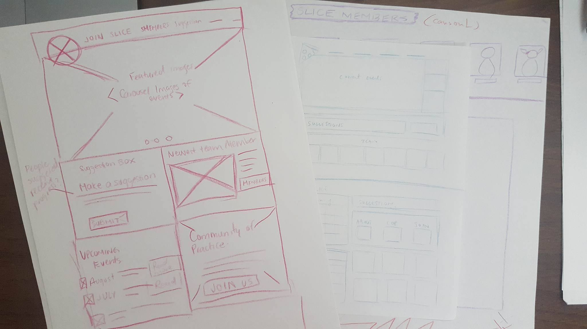
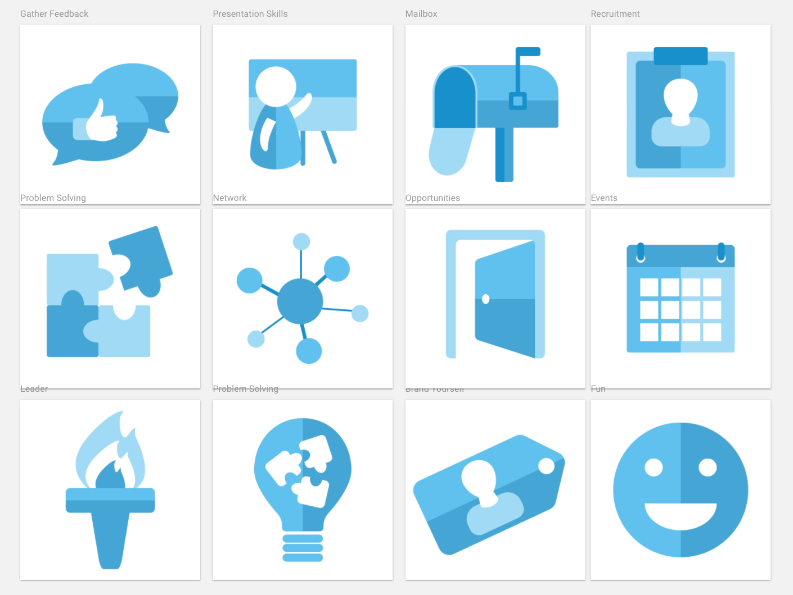

Background
Slice is a committee in the department I worked at during my time at LoyaltyOne in Spring 2017. The committee's website needed a redesign because it did not communicate the goal the community wanted to convey: listening to employee suggestions and doing things about them.
What Did We Do?
With the Slice team, we brainstormed potential designs and sketched them out together. Then, we used Sketch to bring these hand sketches into wireframes and then into detailed visual designs. After a few iterations, the design was ready to be completed and we used Zeplin to deliver assets to the developers.
Sketches
We met up with the Slice Committee and discussed on what message the new website design should convey. During this meeting, we all took time quickly create some sketches. After the sketches were creating, we perfomed a heat mapping exercise (not shown) where the best design was chosen.
Wireframing
After these sketches, we began to generate ideas on the Sketch app and created several wireframes for the development team to review. The main purpose of the site was to accept suggestions for employees in the department. What could we do in the website to make that message clear? How should we position elements so that they encourage more engagement?

Final Design
We continued to iterate on these designs until a final visual design was created. Then, these designs were exported to the developers using Zeplin. Here is what the events page looked like:

Icon Creation
As part of the website, I created a set of consistent icons that were unique.
